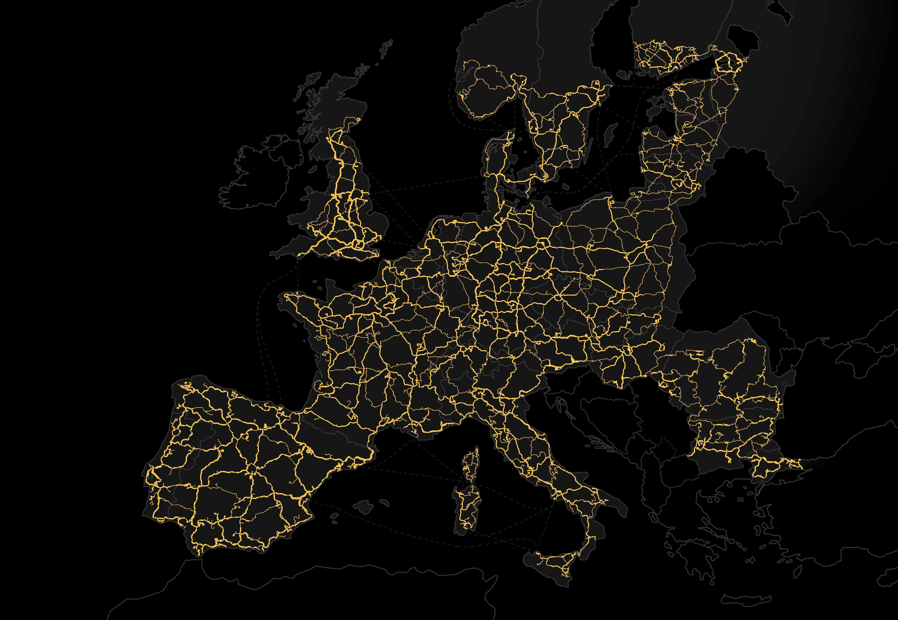

mapa ets2
O mapa do jogo Euro Truck Simulator 2 (ETS2) é um dos elementos mais marcantes e elogiados do simulador. Ele é conhecido por sua vasta escala, detalhamento e constante expansão através de DLCs (conteúdos adicionais). Aqui está uma visão geral: Mapa Base do ETS2 Quando o jogo foi lançado em 2012, o mapa base incluía: Alemanha França (parcial) Itália (norte) Reino Unido Países Baixos Bélgica Áustria Suíça Luxemburgo Parte da Polônia República Tcheca Eslováquia
